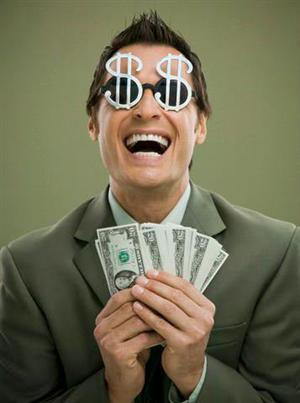
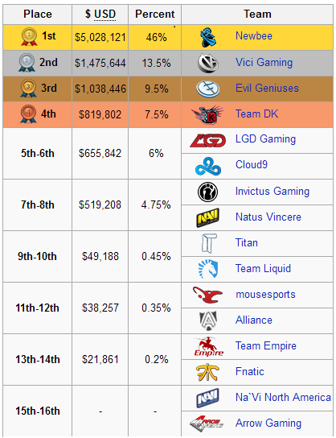

<!DOCTYPE html><html><head><meta charset="utf-8"><meta name="viewport" content="width=device-width, initial-scale=1, maximum-scale=1"><title>Presentasi | Penjelasan DotA Secara Umum</title><link rel="stylesheet" type="text/css" href="bower_components/prism/themes/prism.css"><link rel="stylesheet" type="text/css" href="bower_components/todc-bootstrap-main/dist/css/bootstrap.min.css"><link rel="stylesheet" type="text/css" href="styles/main-presentation.css"></head><body></body></html><nav role="navigation" class="navbar navbar-inverse"><div class="container"><div class="navbar-header"><button type="button" data-toggle="collapse" data-target="presentation-chooser" class="navbar-toggle"><span class="sr-only"></span><span class="icon-bar"></span><span class="icon-bar"></span><span class="icon-bar"></span></button><a href="index.html" class="navbar-brand">Presentasi</a></div><div id="presentation-chooser" class="collapse navbar-collapse"><ul class="nav navbar-nav"><li class="dropdown"><a data-toggle="dropdown" href="#" class="dropdown-toggle">Pilih Subtopik <b class="caret"></b></a><ul class="dropdown-menu"><li><a href="1Penjelasan.html">Penjelasan DotA 2 Secara Umum</a></li><li><a href="2Role.html">Role</a></li><li><a href="3Warding.html">Warding</a></li><li><a href="4Sniper.html">Hero Guide : Sniper</a></li></ul></li></ul></div></div></nav><article id="presentation"><section><h1 style="margin-bottom:-7%;" class="bullet">Topik kita hari ini?</h1><ul><li class="big"></li></ul></section><section><h1 class="bullet"></h1><ul><li style="font-weight:100;font-size:24px;">sebuah permainan <em>(sekarang disebut e-sport)</em> menggunakan strategi dimana kita mengendalikan sebuah hero dan harus saling bekerja sama dengan pemain lain yang ada dalam satu tim untuk dapat menang dalam war dengan tujuan akhir</li><li style="font-size:72px;">Menghancurkan Markas Musuh</li></ul></section><section><p>DotA itu seperti sepak bola, seperti basket, ataupun olah raga lainnya, map nya selalu sama, gaya permainnanya pun sama. Akan tetapi disetiap permainan kita mencari sebuah momentum, memainkan permainan indah layaknya sepak bola.</p></section><section><ul><li>DotA satu-satunya game online yang mampu membuat turnamen dunia yang hadiahnya pun mengejutkan atlet-atlet olahraga.</li><li>Terakhir di tahun 2014, DotA memberikan reward untuk tim NewBee. Merekalah yang menjadi tim DotA nomer 1 di dunia dan memenangkan $11 Million Dollars, angka yang sangat menakjubkan untuk sebuah game online.</li><li></li></ul></section><section><h1 class="bullet">Jadi...</h1><ul><li>apakah sekarang anda tertarik untuk mempelajarinya?</li></ul></section><section><h1>Let's Check it out!</h1></section><section><h1 class="bullet">Fundamental dalam Dota 2</h1><h2 style="color:white;" class="bullet">Game mode</h2><h2 style="color:white;" class="bullet">Aktor</h2><h2 style="color:white;" class="bullet">Item</h2></section><section><h1 class="bullet">Game Mode </h1><h2 style="color:white;">- All Pick -</h2><ul><li>Semua hero dapat digunakan.  </li><li>Semua pemain diberikan waktu 1 menit untuk memilih hero.  </li><li>Pemain juga dapat memilih <em stlye="color:white;">"Random"</em> yang akan memberikan hero secara acak dan bagi pemain yang "Random" akan mendapat bonus 250G di awawl permainan.</li></ul></section><section><h1 class="bullet">Game Mode</h1><h2 style="color:white;">- Captain's Mode - </h2><ul><li>Satu dari masing - masing tim<em style="color:white;">(Kapten Tim)</em>, secara bergantian memilih hero untuk timnya dan memblokir hero sehingga tidak dapat digunakan dalam permainan.</li><li>Mode ini biasa digunakan di turnamen.</li></ul></section><section><h1 class="bullet">Game Mode</h1><h2 style="color:white;">- All Random - </h2><ul><li>Semua pemain diberikan hero secara Acak. </li><li>Pemain dapat mengacak ulang hero mereka sebanyak 1x, namun akan dikenakan penalti gold.</li></ul></section><section><h1 class="bullet">Game Mode</h1><h2 style="color:white;">- Mid Only - </h2><ul><li>Pemain dapat memilih hero yang sama dengan pemain lain.  </li><li>Creeps hanya muncul di lane tengah. </li><li>mode ini sangat cocok untuk permainan 1 lawan 1 (apalagi both pudge atau both mirana :D)</li></ul></section><section><h1 class="bullet">Actor</h1><ul style="color:white;"><li>Heroes</li><li>Creeps</li><li>Buildings</li></ul></section><section><h1>Actor</h1><h2 style="color:white;" class="bullet">- Heroes -</h2><ul><li>Hero adalah aktor utama dalam permainan ini. </li><li>Segala sesuatu yang terjadi bergantung pada mereka</li><li>Pemain dibagi 2 tim dengan anggota 5 orang dan masing - masing pemain dapat mengendalikan 1 hero. </li><li>Masing - masing hero mempunyai kemampuan yang berbeda, sehingga cara memainkannya juga akan berbeda.</li><li>Selama permainan hero akan mendapatkan <em style="color:white;">Experience</em>.</li><li>Ketika <em style="color:white">Experience</em> cukup, hero akan naik level dan dapat mempelajari kemampuan baru.</li><li>Hero dapat memiliki item untuk memperkuat diri</li></ul></section><section><h1>Actor</h1><h2 style="color:white;" class="bullet">- Creeps -</h2><ul><li>Creeps adalah sebuah unit yang dapat berinteraksi dengan hero(Menyerang/Diserang).</li><li>Creeps secara default tidak dapat dikendalikan(Kecuali dengan item seperti <em style="color:white;">helmet of the dominator</em> atau kemampuan khusus hero seperti <em style="color:white;">Chen dan Enchantress</em>).</li><li>Ada 2 jenis creeps, <em style="color:white;">Lane Creeps dan Neutral Creeps</em>. </li><li>Kedua type creep dapat dibunuh untuk mendapatkan <em style="color:white;">Experience dan Gold</em>. </li></ul></section><section><h1>Actor</h1><h2 style="color:white;" class="bullet">- Buildings -</h2><ul><li>Buildings adalah unit khusus yang tidak dapat dikenai skill(kecuali skill2 khusus seperti <em style="color:white;">Bombnya Techies atau Nether Blastnya Pugna</em>), </li><li>Jenis Armor fortified, dan immobile(tidak dapat bergerak). </li><li>Sama seperti creeps, menghancurkan buildings mendapatkan <em style="color:white;">experience dan gold</em>.</li></ul></section><section><h1>Item</h1><h2 style="color:white;" class="bullet">- Penjelasan umum -</h2><ul><li>dapat dibeli dari "Shop" ataupun drop dari Roshan</li><li>memberikan bonus status, kemampuan baru atau fungsi umum pada semua hero(kecuali aghanim's scepter)</li><li>jenisnya banyak dan sangat berbeda antara satu dengan yang lain</li></ul></section><section><h1>Item</h1><h2 style="color:white;" class="bullet">- Kegunaan -</h2><ul><li>memberikan bonus status dan attribute pada hero (str,agi,int,damage,dll)</li><li>memberikan efek khusus(aura) yang menguntungkan bagi kawan maupun merugikan lawan</li><li>memberikan skill tambahan pada hero(dagon scepter, shadow blade,etc)</li></ul></section><section><h1 class="bullet">Aturan bermain</h1><h3 style="color:white;" class="bullet">sebenarnya tidak ada aturan khusus dalam bermain dota, yang perlu dijaga hanyalah etika. Ketika bermain diharapkan para pemain dapat menghormati dan menghargai satu sama lain.</h3><h3 style="color:white;" class="bullet">tetapi, yang paling penting adalah . . .</h3><h1 style=" color: red;text-shadow:3px 3px 0 #FFF,-1px -1px 0 #FFF,1px -1px 0 #FFF,-1px 1px 0 #FFF,1px 1px 0 #FFF;" class="bullet">JANGAN MATI !</h1></section><section><h1 class="bullet">Benefit Of Playing Dota 2</h1><ul style="color:white;"><li>Kamu berolahraga (Dota-2 adalah E-sport, dan kamu bisa menyebut dirimu atlit)</li><li>Melatih kemampuan berpikir secara kritis</li><li>Melatih kerjasama tim</li><li>Melatih karakter kompetitif</li><li>dan....</li></ul></section><section><h3 class="bullet">Total hadiah uang pada kompetisi <em style="color:white;">"Dota 2 The International 2014"</em> adalah sebesar </h3><h2 class="bullet"><strong style="color:red;">$10,930,698</strong></h2></section><section></section></article><script src="bower_components/bespoke.js/dist/bespoke.min.js"></script><script src="bower_components/bespoke-bullets/dist/bespoke-bullets.min.js"></script><script src="bower_components/bespoke-scale/dist/bespoke-scale.min.js"></script><script src="bower_components/bespoke-hash/dist/bespoke-hash.min.js"></script><script src="bower_components/bespoke-progress/dist/bespoke-progress.min.js"></script><script src="bower_components/bespoke-state/dist/bespoke-state.min.js"></script><script src="bower_components/prism/prism.js"></script><script src="bower_components/prism/components/prism-bash.min.js"></script><script src="scripts/main.js"></script><script src="bower_components/jquery/jquery.min.js"></script><script src="bower_components/todc-bootstrap-main/dist/js/bootstrap.min.js"></script>